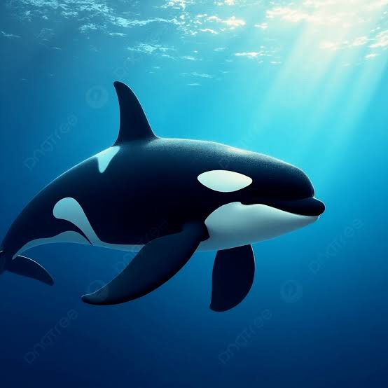

Họ nhà cá heo lớn nhất
Cá voi sát thủ, hay orca, thật ra là loài lớn nhất trong họ cá heo đại dương. Chúng sống ở mọi đại dương trên thế giới, từ vùng nước lạnh Bắc Cực đến biển ấm gần xích đạo.
Con đực có thể dài tới khoảng 9 mét và nặng vài tấn. Chúng là loài săn mồi thông minh, sống thành bầy và giao tiếp bằng những âm thanh riêng của từng gia đình.
Hãy xem cách chúng sống theo bầy hoặc tìm hiểu những mối đe dọa và việc bảo tồn.